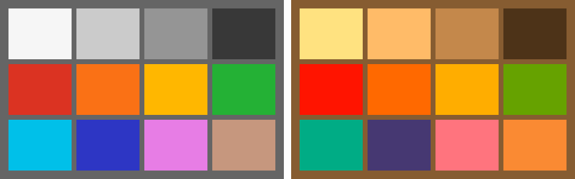

Every chapter after this one processes photographs. This chapter builds the camera that takes them — a camera made entirely of code.
The idea deserves a moment of justification, because it is the book’s single most important design decision. A real photograph gives you the output of a pipeline and no way to know what the right answer was. Was that demosaicing artifact caused by the algorithm, or was the scene really like that? Is the white balance correct, or merely plausible? With a real camera you can never quite know, because you never have access to the scene itself — only to one camera’s imperfect record of it.
So we build the scene ourselves, from physics up. A synthetic world, a fictional lens, a simulated sensor — a forward model that produces raw files the same way a real camera does, except that at every stage we can pause it and look at the truth. When Part 4 measures a demosaicing algorithm, it will measure it against the actual full-color scene, because we rendered it. When Part 3 estimates the color of the light, we will know exactly how wrong the estimate is, because we chose the light. Every claim in this book of the form “this algorithm is better” comes with a number for that reason, and every reader gets identical results, whatever hardware they own.
One scope fence, stated before any code: this is a measurement instrument, not a renderer. Its scenes are flat patches, ramps, and analytic test targets — no geometry, no shadows, no illumination transport, nothing pretty. Every part of it is meant to be read in a sitting. The moment a feature would make it a graphics project, the feature is out.
1.1Scenes as spectra
Here is the trap this section exists to avoid. If we described our synthetic scenes as RGB values — “this patch is (0.8, 0.2, 0.1)” — the whole simulation would quietly become circular. A camera’s job is to produce RGB from light; a scene that is already RGB has done the camera’s job in advance, and everything downstream (white balance, the color matrix of Part 5, the whole question of what color is) would degenerate into pushing our own numbers around. The simulation would still run. It would just have nothing left to teach.
Light doesn’t come in three numbers. Light is a continuum: at every wavelength across the visible range — roughly 380 to 730 nanometers, violet to deep red — a light source emits some amount of power, and a surface reflects some fraction of what arrives. Color, the three-number kind, happens only at the very end, when an eye or a sensor with a small set of differently-tuned detectors collapses that continuum. Our scenes therefore speak in spectra, and the collapse to three numbers is performed — explicitly, in code we write — by the sensor in Section 1.3 and by the mathematics of human vision in Part 5.
A spectrum in this book is 36 numbers: samples every 10 nanometers from 380 to 730. That grid is a compromise, chosen deliberately. Fine enough that our colorimetry lands within a fraction of a percent of published reference values (the tests below hold us to that); coarse enough that a spectrum fits on one line of a page and a for loop over it is something you can read.
code/pxp/spectrum.pyclass Spectrum:
"""36 samples across the visible range, one per grid wavelength.
The same type serves two roles. As a *light*, samples are relative
power. As a *reflectance*, samples are the fraction of light a
surface returns at that wavelength, between 0 and 1.
"""
def __init__(self, samples):
if len(samples) != SAMPLE_COUNT:
raise ValueError(f"a Spectrum has {SAMPLE_COUNT} samples, "
f"got {len(samples)}")
self.samples = list(samples)
@classmethod
def from_function(cls, fn):
"""Sample fn(wavelength_nm) across the grid."""
return cls([fn(w) for w in WAVELENGTHS])
def lit_by(self, light):
"""The light leaving a surface: reflectance times illumination,
wavelength by wavelength. self is the reflectance."""
return Spectrum([r * l for r, l
in zip(self.samples, light.samples)])
def scaled(self, factor):
return Spectrum([s * factor for s in self.samples])
Note the two roles in the docstring. A light is a spectrum of emitted power. A surface is a spectrum of reflection fractions — a number between 0 and 1 at each wavelength. And the single most load-bearing line of physics in the whole simulator is the method that combines them: the light leaving a surface is the illumination times the reflectance, wavelength by wavelength. That one multiplication, lit_by, is where every color cast, every white-balance problem, and every metameric surprise in this book will come from.
The lights
The book keeps three lights, plus a reference. The first is tabulated: D65, the CIE’s standard “average daylight,” the reference white of sRGB and the closest thing color science has to a default sun. Its 36 samples come from the CIE’s own published table, resampled onto our grid — one of exactly two pieces of external data in the entire simulator (the other is the CIE observer, which arrives in Part 5).
The second light needs no table at all, and it is the one this chapter is proudest of. An incandescent bulb is a glowing filament, and the emission of a glowing body is given by Planck’s law:
\[ B(\lambda, T) \;\propto\; \frac{1}{\lambda^5}\,\frac{1}{e^{c_2/\lambda T} - 1} \]
power at each wavelength \(\lambda\) for a body at temperature \(T\), with \(c_2\) a physical constant. Run at 2856 kelvin, this formula is CIE standard illuminant A — the warm, orange archetype of every tungsten photograph ever taken. We get a standards-grade light source from four lines of arithmetic:
code/pxp/illuminant.pydef incandescent(temperature_k=2856.0):
"""A glowing filament, from physics rather than a table: Planck's
law gives the emission of a hot body at each wavelength. At 2856 K
this is CIE standard illuminant A — warm, orange, and entirely
computable from one formula."""
c2 = 1.4388e-2 # second radiation constant, m*K
def planck(wavelength_nm):
wl = wavelength_nm * 1e-9 # to meters
return wl ** -5 / (math.exp(c2 / (wl * temperature_k)) - 1.0)
anchor = planck(560.0)
return Spectrum.from_function(lambda w: planck(w) / anchor)
The third light is a deliberate troublemaker: a fluorescent tube, modeled as a dim continuum with three sharp emission lines. Nothing about it is exotic — cheap tubes really do look like this — but a light that delivers its power in spikes breaks the comfortable intuition that “white light is white light,” and in Part 5 it will let us demonstrate metamerism: two surfaces that match perfectly under one light and visibly disagree under another. We build it now and keep it in a drawer.
Where the numbers come from
The D65 table and (in Part 5) the CIE 1931 observer curves are point-sampled from the CIE’s open data files — 1-nanometer tables published under ISO/CIE 11664, sampled at our grid wavelengths with no interpolation. Everything else spectral in this book — every surface, the filament, the fluorescent — is computed from formulas printed on these pages. The tests pin our sampled arithmetic to the published white points: D65 must land at chromaticity (0.3127, 0.3290) and illuminant A at (0.4476, 0.4074), within two parts in a thousand.
code/tests/test_color.pyclass TestWhitePoints(unittest.TestCase):
def assert_chromaticity(self, light, expected_x, expected_y, tol):
x, y = color.chromaticity(color.xyz(light))
self.assertAlmostEqual(x, expected_x, delta=tol)
self.assertAlmostEqual(y, expected_y, delta=tol)
def test_daylight_is_d65(self):
self.assert_chromaticity(illuminant.daylight(),
0.3127, 0.3290, tol=0.002)
def test_incandescent_is_illuminant_a(self):
self.assert_chromaticity(illuminant.incandescent(),
0.4476, 0.4074, tol=0.002)
def test_equal_energy_is_centered(self):
self.assert_chromaticity(illuminant.equal_energy(),
1 / 3, 1 / 3, tol=0.002)
The surfaces
Real test charts have measured patches — someone pointed a spectrophotometer at painted squares. Ours are designed, and from just two shapes: a smooth step that switches on above a chosen wavelength, and a smooth bump centered on one.
code/pxp/reflectance.pydef step(wavelength, center, width):
"""Rises smoothly from 0 to 1 as wavelength passes center."""
return 1.0 / (1.0 + math.exp(-(wavelength - center) / width))
code/pxp/reflectance.pydef bump(wavelength, center, width):
"""A smooth peak of height 1 at center, falling off on both sides."""
return math.exp(-((wavelength - center) / width) ** 2)
Chemistry is kind to us here: these are honestly the shapes real pigment reflectances take. A red surface is red because its reflectance steps up somewhere around 600 nm; a green one carries a bump near the middle of the range. Building patches from formulas instead of measurements keeps the chart fully original and — better — printable. Here is the entire chart, every patch a one-line formula:
code/pxp/reflectance.pydef color_chart():
"""The book's twelve-patch chart: name -> reflectance.
Neutrals down the first column, then the strong colors, then two
softer 'real world' surfaces. Every worked example about color in
this book photographs these patches.
"""
return [
("white", patch(lambda w: 0.92)),
("gray-60", patch(lambda w: 0.60)),
("gray-30", patch(lambda w: 0.30)),
("black", patch(lambda w: 0.04)),
("red", patch(lambda w: 0.03 + 0.82 * step(w, 600, 12))),
("orange", patch(lambda w: 0.04 + 0.80 * step(w, 575, 15))),
("yellow", patch(lambda w: 0.05 + 0.83 * step(w, 540, 15))),
("leaf-green", patch(lambda w: 0.04 + 0.48 * bump(w, 540, 45))),
("cyan", patch(lambda w: 0.05 + 0.72 * (1 - step(w, 555, 15)))),
("blue", patch(lambda w: 0.04 + 0.60 * bump(w, 455, 35))),
("magenta", patch(lambda w: 0.80 - 0.68 * bump(w, 540, 50))),
("skin", patch(lambda w: 0.22 + 0.33 * step(w, 570, 25))),
]
Twelve surfaces: four neutrals, seven strong colors, and one soft “skin” tone that will keep the later chapters honest (nobody notices when an algorithm ruins a magenta patch; everybody notices ruined skin). The patch helper refuses any formula that leaves the physical range — a surface cannot reflect less than nothing or more than everything.
First look at ground truth
We now have lights and surfaces, and lit_by to combine them. To actually see the result, this chapter borrows two tools that will not be properly explained until later — the integration of a spectrum against the CIE observer to get XYZ (Part 5) and the sRGB encoding for display (Part 7). They live in pxp.color, they are as explicit as everything else, and for now they are simply how the simulator shows us its world. Figure 1.1 is the payoff:

Look at what the filament does. The white patch is peach. The gray column has become a ladder of warm tans. Blue has collapsed toward violet-black — a tungsten bulb emits very little short-wavelength power, so a surface that reflects only short wavelengths has almost nothing to reflect. And the skin patch has gone from plausible to sunburnt. None of this is an artifact or an error: this is what the scene actually looks like under that light, computed wavelength by wavelength from formulas you have now read in full. Your visual system performs a version of white balance so relentlessly that you have likely never seen a white surface render this honestly before.
That is the entire point of the simulated camera. A real photograph of a real chart under a real bulb would give us pixels like the right grid — but entangled with one particular sensor’s spectral taste, one manufacturer’s processing, and no way to separate the light from the camera. Here we have the scene itself, pristine, with the camera not yet built. Everything the rest of the pipeline does will be measured against this.
This part is a draft in progress. Next: 1.2, a small fictional lens — parametric distortion, vignetting, and chromatic aberration; 1.3, the sensor — spectral sensitivities, noise, and the Bayer mosaic; 1.4, assembling the raw file.